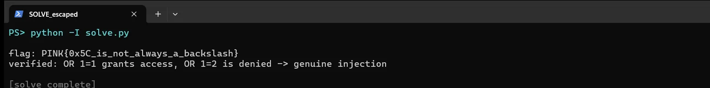

01Start point: recon
- What I found: a single POST form (username and password), no CSRF token, no input reflected back.
- What I found: every wrong attempt returns the same "Access denied" and the same 3903-byte page. No SQL errors leak.
- Thinking: with no error output, I needed a side channel to tell a true condition from a false one.
02Dead end: the easy bypasses
- What I did: tried raw quotes in username or password, the trailing-backslash two-field trick, array parameters (username[]=...), a JSON body, duplicate parameters, and LIKE wildcards (% and _).
- Dead end: all of them still gave "Access denied" with no timing change. Raw quotes and the trailing backslash were escaped, so the escaper handles the backslash too, like mysqli_real_escape_string.
- Thinking: a working backslash escape plus the hint "escaped all special characters" points at the classic multibyte (GBK) bypass.
03Pivot: find the injection with a time oracle
- What I found: the escaper turns a quote 0x27 into 0x5C 0x27. But if the DB connection charset is multibyte, the byte pair 0xBF 0x5C is a single character. Putting the raw byte 0xBF right before the quote makes the escaper's 0x5C get absorbed into one multibyte character, and my 0x27 quote stays live and breaks out of the string.
- What I did: sent username = 0xBF 0x27 followed by " OR SLEEP(3)-- -".
- Result: the response took about 3 s against a baseline of about 0.8 s. Lead bytes 0xBF, 0xAF, 0x81, 0x95 and 0xDF all worked, while 0xA1 and 0xFF did not (they do not form a valid multibyte pair with 0x5C). The injection works in both the username and password fields.
04Pivot: log in and read the flag
- What I did: sent username (raw bytes) = 0xBF 0x27 followed by " OR 1=1-- -", with password = x.
- What I found: the query becomes WHERE username='<multibyte-char>' OR 1=1-- -' AND password='x', so the condition is always true.
- Result: the page returns "Access granted: PINK{0x5C_is_not_always_a_backslash}".
- Thinking: OR 1=2-- - is still denied, which confirms it is the injection logging me in and not a lucky guess.
